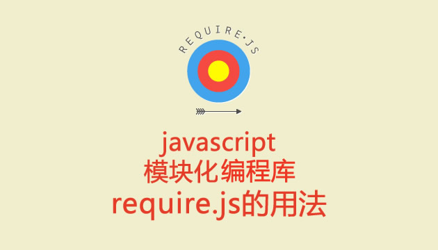

ウェブサイトの機能が徐々に豊富になるにつれて、ウェブページ内のjsもますます複雑で肥大化してきました。従来のscriptタグを使って一つひとつのjsファイルを読み込む方法では、現在のインターネット開発モデルに対応できなくなっています。チームコラボレーション、モジュール再利用、ユニットテストなど、一連の複雑なニーズが必要とされています。

RequireJSは非常に小型のJavaScriptモジュールローディングフレームワークであり、AMD仕様の最も優れた実装の一つです。最新バージョンのRequireJSは圧縮後わずか14Kで、非常に軽量と言えます。また、他のフレームワークとも連携でき、RequireJSを使用することで、フロントエンドのコード品質を確実に向上させることができます。
requirejsがもたらすメリット
requirejsに関する公式の説明：
RequireJS is a JavaScript file and module loader. It is optimized for in-browser use, but it can be used in other JavaScript environments, like Rhino and Node. Using a modular script loader like RequireJS will improve the speed and quality of your code.
大致意思：
ブラウザではjsファイルのモジュールローダーとして使用でき、NodeやRhino環境でも使用できます、などなど...。この文はrequirejsの基本機能「モジュール化ロード」を説明しています。モジュール化ロードとは何か？これからの章で一つ一つ説明していきます。
まず、よくあるシナリオを見てみましょう。例を通してrequirejsの使い方を説明します。
一般的な書き方
index.html:
<!DOCTYPE html>
<html>
<head>
<script type="text/javascript" src="a.js.html"></script>
</head>
<body>
<span>body</span>
</body>
</html>
a.js:
function fun1(){
alert("it works");
}
fun1();
こちらの書き方の方が好みかもしれません
(function(){
function fun1(){
alert("it works");
}
fun1();
})()
2番目の方法はブロックスコープを使用してfunctionを宣言し、グローバル変数の汚染を防いでいますが、本質は同じです。上記の2つの例を実行したとき、お気づきかもしれませんが、alertが実行されるとき、htmlの内容は真っ白です。つまり、<span>body</span>表示されておらず、「確定」をクリックした後に初めて現れます。これが～です。JSがブラウザのレンダリングをブロックするその結果。
requirejs写法
もちろん、まずrequirejsのウェブサイトに行ってjsをダウンロードする必要があります ->requirejs.org
index.html:
<!DOCTYPE html>
<html>
<head>
<script type="text/javascript" src="require.js.html"></script>
<script type="text/javascript">
require(["a"]);
</script>
</head>
<body>
<span>body</span>
</body>
</html>
a.js:
define(function(){
function fun1(){
alert("it works");
}
fun1();
})
ブラウザに「it works」と表示され、正しく動作していることがわかります。しかし、一点異なるのは、今回はブラウザが真っ白ではなく、bodyがすでにページに表示されていることです。これまでに、requirejsには以下のような利点があることがわかります。
- jsの読み込みがページのレンダリングをブロックするのを防ぎます。
- プログラム呼び出し方式でjsを読み込み、以下のような見苦しいシナリオの発生を防ぎます。
<script type="text/javascript" src="a.js.html"></script> <script type="text/javascript" src="b.js.html"></script> <script type="text/javascript" src="c.js.html"></script> <script type="text/javascript" src="d.js.html"></script> <script type="text/javascript" src="e.js.html"></script> <script type="text/javascript" src="f.js.html"></script> <script type="text/javascript" src="g.js.html"></script> <script type="text/javascript" src="h.js.html"></script> <script type="text/javascript" src="i.js.html"></script> <script type="text/javascript" src="j.js.html"></script>
コード内の具体的な意味やその他の特性については、今後の章で説明します。JS模块化工具requirejs教程(二)：基本知识
文章来源：https://github.com/liuxey/blog/issues/1